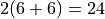
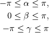
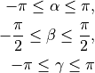
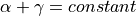
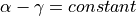

Euler Angles¶
Since Euler angles are an intuitive way to specify a rotation in 3D, they are often exposed at user interfaces. However, there are 24 different conventions that could be used. Furthermore, you have to find out whether degrees or radians are used to express the angles (we will only use radians in pytransform3d).
Example¶
Here we rotate about the extrinsic (fixed) x-axis, y-axis, and z-axis by 90 degrees.
(Source code, png, hires.png, pdf)
{kind=link}
{kind=link}
24 Conventions¶
Euler angles generally refer to three consecutive rotations about basis vectors. There are proper Euler angles for which we can distinguish 6 conventions: xzx, xyx, yxy, yzy, zyz, and zxz. As you can see, proper Euler angles rotate about the same basis vector during the first and last rotation and they rotate about another basis vector in the second rotation. In addition, there are Cardan (or Tait-Bryan) angles that rotate about three different basis vectors. There are also 6 conventions: xzy, xyz, yxz, yzx, zyx, and zxy.
If you read about Transformation Ambiguities and Conventions, you know that the order in which we concatenate rotation matrices matters. We can make extrinsic rotations, in which we rotate about basis vectors of a fixed frame, and we can make intrinsic rotations, in which we rotate about basis vectors of the new, rotated frame. This increases the amount of possible conventions to  (if we only allow active rotation matrices).
Range of Angles¶
Euler angles rotate about three basis vectors with by the angles
 ,
,  , and
, and  . If we want to find the
Euler angles that correspond to one rotation matrix
. If we want to find the
Euler angles that correspond to one rotation matrix  , there is an
infinite number of solutions because we can always add or subtract
, there is an
infinite number of solutions because we can always add or subtract
 to one of the angles and get the same result. For this
reason the proper Euler angles are typically restricted to
to one of the angles and get the same result. For this
reason the proper Euler angles are typically restricted to

and Cardan angles are usually restricted to

Gimbal Lock¶
The special case of a so-called gimbal lock occurs when the second angle
is at one of its limits. In this case the axis of rotation
for the first and last rotation are either the same or exactly opposite,
that is, an infinite number of angles and
will represent the same rotation even though we restricted their range
to an interval of length : either all pairs of angles that
satisfy  or all pairs of angles
that satisfy . When we reconstruct
Euler angles from a rotation matrix, we set one of these angles to 0 to
determine the other.
Other Names¶
There are also other names for Euler angles. For example, the extrinsic xyz Cardan angles can also be called roll, pitch, and yaw (or sometimes the intrinsic convention is used here as well). Roll is a rotation about x, pitch is a rotation about y and yaw is a rotation about z.
API: Rotation Matrix from Euler Angles¶
Compute active rotation matrix from intrinsic xzx Euler angles. |
|
Compute active rotation matrix from extrinsic xzx Euler angles. |
|
Compute active rotation matrix from intrinsic xyx Euler angles. |
|
Compute active rotation matrix from extrinsic xyx Euler angles. |
|
Compute active rotation matrix from intrinsic yxy Euler angles. |
|
Compute active rotation matrix from extrinsic yxy Euler angles. |
|
Compute active rotation matrix from intrinsic yzy Euler angles. |
|
Compute active rotation matrix from extrinsic yzy Euler angles. |
|
Compute active rotation matrix from intrinsic zyz Euler angles. |
|
Compute active rotation matrix from extrinsic zyz Euler angles. |
|
Compute active rotation matrix from intrinsic zxz Euler angles. |
|
Compute active rotation matrix from extrinsic zxz Euler angles. |
|
Compute active rotation matrix from intrinsic xzy Cardan angles. |
|
Compute active rotation matrix from extrinsic xzy Cardan angles. |
|
Compute active rotation matrix from intrinsic xyz Cardan angles. |
|
Compute active rotation matrix from extrinsic xyz Cardan angles. |
|
Compute active rotation matrix from intrinsic yxz Cardan angles. |
|
Compute active rotation matrix from extrinsic yxz Cardan angles. |
|
Compute active rotation matrix from intrinsic yzx Cardan angles. |
|
Compute active rotation matrix from extrinsic yzx Cardan angles. |
|
Compute active rotation matrix from intrinsic zyx Cardan angles. |
|
Compute active rotation matrix from extrinsic zyx Cardan angles. |
|
Compute active rotation matrix from intrinsic zxy Cardan angles. |
|
Compute active rotation matrix from extrinsic zxy Cardan angles. |
|
Compute active rotation matrix from extrinsic roll, pitch, and yaw. |
API: Euler Angles from Rotation Matrix¶
|
Compute intrinsic xzx Euler angles from active rotation matrix. |
|
Compute active rotation matrix from extrinsic xzx Euler angles. |
|
Compute intrinsic xyx Euler angles from active rotation matrix. |
|
Compute extrinsic xyx Euler angles from active rotation matrix. |
|
Compute intrinsic yxy Euler angles from active rotation matrix. |
|
Compute extrinsic yxy Euler angles from active rotation matrix. |
|
Compute intrinsic yzy Euler angles from active rotation matrix. |
|
Compute extrinsic yzy Euler angles from active rotation matrix. |
|
Compute intrinsic zyz Euler angles from active rotation matrix. |
|
Compute extrinsic zyz Euler angles from active rotation matrix. |
|
Compute intrinsic zxz Euler angles from active rotation matrix. |
|
Compute extrinsic zxz Euler angles from active rotation matrix. |
|
Compute intrinsic xzy Cardan angles from active rotation matrix. |
|
Compute extrinsic xzy Cardan angles from active rotation matrix. |
|
Compute intrinsic xyz Cardan angles from active rotation matrix. |
|
Compute extrinsic xyz Cardan angles from active rotation matrix. |
|
Compute intrinsic yxz Cardan angles from active rotation matrix. |
|
Compute extrinsic yxz Cardan angles from active rotation matrix. |
|
Compute intrinsic yzx Cardan angles from active rotation matrix. |
|
Compute extrinsic yzx Cardan angles from active rotation matrix. |
|
Compute intrinsic zyx Cardan angles from active rotation matrix. |
|
Compute extrinsic zyx Cardan angles from active rotation matrix. |
|
Compute intrinsic zxy Cardan angles from active rotation matrix. |
|
Compute extrinsic zxy Cardan angles from active rotation matrix. |